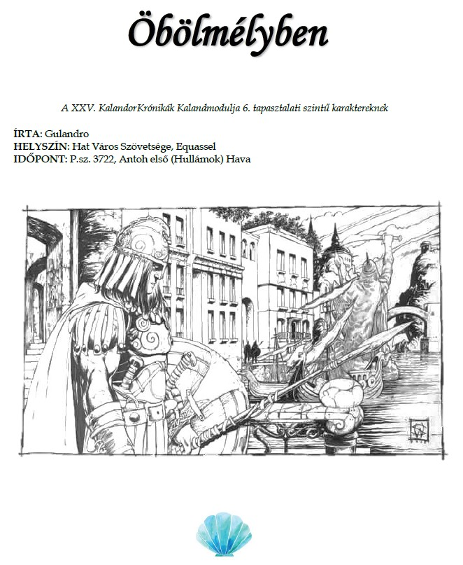

Öbölmélyben hangulatkeltő
Avagy a XXV. KalandorKrónikák Kalandmodulja 6. tapasztalati szintű karaktereknek
és a Dalok Hat Városból M.A.G.U.S kiegészítő modulja.

Akkor lássuk:
A történethez tartozó lejászási lista:
Új-Pyarron hadikikötőjében várakozol egy hivatalosan nem létező hajóra. Az Uwel-negyed vizét lágyan fodrozza a
déli szél, ami a város mélyéből az emberi civilizáció fővárosának ezer illatát hozza. Legtöbben csak a tenger
hínár- és halszagát éreznék meg, de számodra ez olyan természetes, hogy más aromákat is könnyen azonosítasz:
erősebb dzsad illatvizet a korán kelt városőrökön, niarei fűszeres tea illatát a közeli őrbódéból és shadoni dohány
füstjét a a közeli Arzenálból.
Összébb húzod magadon a mélykék köpenyt, de nem azért mert fázol. Úgy érzed az elmúlt
időszak és a közeljövő eseményeit közösen csak így, befelé fordulva rendezheted át értelmes
egésszé. Amit láttál, még ha isteni rendelésre is, vagy csak álmok sugallta tettekre sarkallt.
Megtetted a tőled telhetőt. Elmentél az Ezüst Rend falkához, és kiválasztottad azokat a
Kalandozókat, akik már eddig is eleget tettek az Örök Városért. H’Lagoon, a falka vezetője
ugyan felvonta a szemöldökét egyik-másik választásodra, de ellenkezni nem mert. Magasabb
rendű irányelveket követtél, és ezzel ő is tisztában volt. Az Istenek hegye magasodott mögötte
a kalmár dolgozószobájában, amikor kinyilvánította akaratát.
A Bálnalélek, egy három árbócos holk, szinte hangtalanul sodródott közelebb a mólóhoz.
Vitorlái közül csak a kikötői manőverezéshez szükségesek voltak kibontva. A fedélzetén
Gilron önjáró masináihoz hasonló olajozottsággal és hatékonysággal zajlott a munka. A
kapitány magas, vékony, rozmárbőr mellényt viselő férfi, előzékenyen nyújtja hasonlóan
tengeri állatokból varrt kesztyűs kezét feléd. Nem eresztenek le pallót, a hajó veszít ugyan
valamit lendületéből, de meg nem áll. Ha megpróbálod elkapni a kapitány kinyújtott karját,
hogy a fedélzetre lépj, Lapozz a 6-ra. Ha inkább saját erődből jutsz fel a fedélzetre, akkor
Lapozz a 17-re.
Elnéző mosollyal idézed meg a mennyek haragját és a lecsapó villám kábulatba taszítva a
közelebbi támadódat. Nyakadban felizzik az Antoh szent szimbólum, mintha neki is jutna az
égi delejből és bátorítólag melegíti a kebleidet. Közelebb is lépsz a másikhoz, mikor annak
mellkasából egy hegyes penge bukkan elő és beszakadt tüdejét fájlalni sem marad ideje mikor
hangtalanul a mögötte megjelenő csuklyás alak lábaihoz omlik. Sóhajtasz, az idegen érkezését,
bármennyire is alapos és profi volt, számodra megelőzte jellegzetes fűszeres illata, ami
Armenre emlékeztetett.
- Csak nem a mesebeli Kobrát kutatod még mindig?
- Engedje meg Viktória úrnő, hogy ellentmondjak. A Kobra nem egy mese … már nagyon közel járok, hogy ezt az északi behatolót előkerítsem és felszámoljam a szervezetét. – jegyzi meg miközben akkurátusan pakolja a holttestet a sikátor mélyére.
- S gondolom, mindezt a helyi Szobor háta mögött kell megcselekedned. – jegyzed meg, miközben a füstölő támadódhoz guggolsz jobban megvizsgálni. Felemeled a nyakából a különös medaliont – Láttál már ilyet? Eléggé megolvadt.
- Többfélét is úrnő. Ez is a Homályjáró egyik jelképe. Holdkaréj és gyökerek. Renegát noir papok és északi morgena hívek mind a palástja alá menekülnek. Lassan olyan helyeken is feltűnnek, ahol gondot okozhatnak.
- Talán – gondolkodsz el visszaengedve a medált és néhány szóval Antoh kegyelmét kéred a távozóra – Talán hamarosan nem tudom elkerülni, hogy szembenézzek a képviselőjükkel.
- Addig is – tűzi rejtett tokjába a Kagylóbontóját – engedd meg, hogy védelmedre legyek az Equasselbe vezető úton.
Elfogadod. Valahol azért, mert tudod, hogy nem engedne tovább egyedül, s mert valóban jól esik egy ismerős arc az előtted álló kihívásokhoz Öbölmélyben. Közösen tértek vissza a Bálnalélek nevű holkra és bár a kapitány szerint nem mindenki tért vissza a kitűzött időpontra, úgy érzed nem késlekedhettek tovább, és folytatnotok kell az utat a korábbi időveszteség miatt. Ha Immyn Hassyn felé hajózol tovább, Lapozz a 13-ra. Ha Quesserthol felé veszed az irányt, Lapozz a 9-re.
A Ragor-félsziget hegyvonulatai komor ívet festenek a nyugati horizontra. Két napja vagytok
úton és még alig találkoztatok szembe más hajóval. Arginsalo vonalában jártok, ezt érzed,
amikor a nyílt víz felől különös hajó közeledik felétek. Zászlaján Cadatto, egy Kereskedő
Hercegségek béli város színeit pillantjátok meg, ami alapján ugyanúgy lehetnek kalózok is,
mint egyszerű kereskedők. A kapitány kérdőn néz rád, és te egy biccentéssel megadod neki a
jelet. Közel és távol sehol egy hadigálya, így rátok hárul most ezeknek a vizeknek a felügyelete.
A közeledő hajó újabb különös szagokat és megérzéseket rejt a számodra: áfiumok egész
garmadája lehet a hajón és a két árbócos brigantin nagyobb és gyorsabb is, mint a ti mély
merülésű, régimódibb járművetek. A kezeléséhez szükséges emberanyagnál azonban
ösztönösen többet érzékelsz felőlük: ugyanúgy érzed a hajó gyomrában senyvedők életerejét,
mint az alattuk a mélyben vajúdó nősténycápa kínjait és a lassuló vitorlaszerkezet
vitorlázatára leszálló sirályok szomjúságát. Ez egy rabszolgakereskedő hajó, ami
csempészkedik is nagy eséllyel.
A Bálnalélek akaratod szerint mellé áll, és a matrózok feltűnés nélkül egy-egy tompább
fémtárgy, ütőalkalmatosság és más fegyvernek használható tárgy felé mozdulnak. Stavros
kapitány bíztatóan hordozza rajtuk végig a tekintetét ,és közben megoldja a mellénye
gombjait, hogy szabad uta legyen a két kése markolatához. A brigantin fedélzetéről
érdeklődve kurjantanak felétek, és sárga szemeikből egyértelműen kiolvasod, hogy a
Vigyorgók bandájához tartoznak. Ha minden erőddel az ellenség legyőzésére koncentrálsz,
akkor Lapozz a 18-ra, Ha mindent megteszel, hogy erőszak nélkül rendezd el az ügyet, akkor
pedig Lapozz a 11-re.
A kikötőben ringatózva a Bálnalélek fedélzetére tódul a násznép. Alig térülsz-fordulsz és friss
virágok kúsznak fel az ünneplők munkája révén a kötélzeten és még néhány árus is megjelenik
a pallókon gyors üzletet szimatolva. A pár nagyon eltökélt, a fiú valamivel alacsonyabb, mint
a lány, de szélesebb és napcserzettebb. Húsz esős évszakot ha megélt, a lány pedig valamivel
többet. Tenyere, amivel párja kezét fogja kemény munkáról árulkodik. Mindketten Antoh hitét
követik, és szerelmet vallanak szenvedélyesen, akadálya hát nem lehet a frigynek.
Antoh hatalmát szövöd a szertartás szövegébe, delfinek gyűlnek a palánk alá hangodat
hallgatva. A sós víz melegen nyaldossa a hajótestet, a nap hevesen süt. Illdomosnak tartod
felidézni a harmadik Antoh kegyeltnek a legendáját, aki Hat Város védelmében egyedül
hajózott neki a Bölcső-öblöt és a Hat Várost fenyegető óceánról idáig tomboló orzóhullámnak.
A reménység utolsó pislákoló gyertyalángjaként ragyogott a sötét, zavaros viharfal előtt, de
áldozata lebékítette a távoli földeken fogant áradatot, és Antoh ölében figyelhette tovább azok
sorsát, akiket megmentett. Kívánod, hogy a házastársak is legyenek ilyen állhatatosak és
áldozatkészek egymásért, bármilyen nehézséggel szembesüljenek is az életben.
Üdvrivalgás fogadja a mondandódat és a pár fogadalmát. A lakodalom déltől jóval éjközép
utánig tart, de a friss házasok a kék hold keltét már nem élvezték együtt a sokasággal.
Hajnalban korán ébredsz, de Kortos még korábban mosolyogva hívja fel figyelmedet a
fedélzetről távozó kettősre. Gesztusaiból jól látszik, hogy az éjszakának ára volt, és a
vehemencia, amivel az asszonyka cibálja maga után férjét egyértelművé teszi, hogy a matróz
karriere itt és most tört ketté. Jól gondoltátok, a kapitány lajstromba veszi a visszatérőket
induláskor, és a fiú nem tér vissza. Immyn Hassyn saját szabályok szerint lélegzik. Folytatjátok
utatokat Öbölmélybe. Lapozz a 20-ra.
Feszült pillanatokat éltek át a Bálnalélek fedélzetén miután Kortos a mélybe veti magát a cápák
közé. Csak pillanatokkal azután, hogy eltűnik jut eszedbe, hogy mágiáddal másképpen is
segíthetted is volna a vállalkozását. Magadban elnyomsz egy nőietlen szitkot, de az a gondolat
sem nyugtat meg, hogy valóban nem csatamágusnak képeztek ki téged. Bízol a hat városi
fejvadász tudásában, és ő nem is hagy cserben: pár perc múlva a lánnyal és egy friss harapással
tér vissza. Látszik, hogy csak egyik kezével tempózva tudta felhozni a lányt. A brigg eközben
folyamatosan süllyedt a háttérben, s mikor a lányt feladja nektek már csak az árbócai
látszanak.
Az új-godoniak örvendeznek a megmenekülésnek, te pedig a férfi sebét kezded el
begyógyítani fennen imádkozva Antoh áldásáért. A mély, majdnem a végtagot leválasztó
harapás nyoma fehér heggé alakul a szemed láttára, Kortos pedig gyöngyöző homlokkal, de
szisszenés nélkül viseli a fájdalmakat. „Boszorkányság”-hallod a suttogást a hátad mögül, de
megpördülve sem tudod megállapítani, hogy a sok idegen arc közül kitől jött a hang. Abban
nem is reménykedsz, hogy kiadják maguk közül, így dühödten meghagyod a kapitánynak,
hogy figyeljenek vendégeitekre és Quessertholig a kabinodban maradsz.
Azért te is felmész a fedélzetre, hogy lásd az utolsó új-godonit is távozni, de amikor a kislányra kerül a sor ő könnyesen kiabálva valamit hazája nyelvén öleli át Kortos nagyúr combját és szabályosan el kell tőle szakítaniuk az övéinek.
Niarei felesége dacára nem volt gyereke, hisz a fejvadászoknak általában nincsen. Érthető, hogy miért. Üveges tekintetében mégis azt látod, hogy a kislány gesztusa megérintette. Ezért is parancsolod a kapitánynak, hogy a szükségesnél többet ne töltsetek a külső kikötőben, ami általában nagyobb hajók fogadására van fenntartva és az embereknek is rövidebb kimenőt adjon. Utazásotok utolsó állomása, Equassel már vár rátok. Lapozz a 20-ra.
Stavros lendületesen ránt fel, mikor belekarolsz. Nem látszik rajta, de olyan könnyen emeli fel
női testedet, mintha csak egy szextánst forgatna. A kikötő mólója hamar távolodik mögöttetek,
és már csak a város öblét körbevevő fal vízkapuján kell kijutnotok. Szemből senki sem érkezik
éppen, így akadálytalanul haladtok át. A matrózok pedig némán tudomásul veszik, hogy egy
nő lépett a fedélzetre. Felismernek, s akik nem, legalább a nyakadban lógó Antoh szent
szimbólumáról tudják, hogy ki vagy, mi vagy. Stavros kapitány elégedetten morrant csak
üdvözlésképpen, s büszkén húz elő szíve fölül egy talizmánt, ami a Tengerúrnő világi híveinek
is védelmet nyújt az ő birodalmában.
A Gályák-tengere több részből áll a kartográfusok szemében. Sokan csak a Pyarrontól Új-
Godonig tartó összefüggő vizet látja. Azok pedig, akiknek rendszeresen járni is adatott a
hullámait eme világnak meghittebb viszonyban vannak a tájékaival. Shadon és az egykori
Gorvik közötti véres habokat az óceántól a Kereskedő Herceségekig, mint Külső-Tenger
emlegetik a hajósok, a két Godonból eredeztetett birodalom közötti sávot, mint a zavaros
Közép-tengerét ismerik sokan és a Ragor-félszigete már a Hat Városba vezető áramlatokkal a
Belső-tenger, ahová a Bálnalélek kihajózni igyekszik.
A távolságok csalfa biztonságérzetet adnak, s még tapasztalt hajósokkal is bölcsen meg kell
válogatni, hogy ki milyen útvonalat, mely láthatatlan folyóösvényt választ céljai eléréséhez.
Hogyha a Tilemaer-i kikötő felől közelítitek meg a Hat Várost, akkor Lapozz a 14-re. Hogyha
inkább Armen partjai felé tartotok, Lapozz a 3-ra.
Rhína a megszokott időben ébreszt a saját cellájából. Lakosztályod kevésbé tetszik hidegnek
így, magadtól is felébrednél. A kohók és műhelyek hangja ilyenkor élénkül meg, s még a belső
kikötő zajai is később érnek fel palotád tornyáig. Ornando dac Quesserthol vagy, a város ura,
helyed van a Hat Város Szenátusában és a Fogalmazok asztalánál. Nem tettél érte semmit és
ez minden reggel egyértelmően kiolvasható az ágyat fölötti fába vésett wavarini madár
tekintetéből. Ősz sörényedbe túrsz és az ágy mellé készített hideg teáért nyúlsz felülve.
Fájdalom nyilall a mellkasodba és a késő éjszakába nyúló kardvívóleckét hibáztatod érte.
Okkal, a te korodban már atyád cask a számszeríjászversenyeket nézte és jogarnál, kanálnál
bonyolultabb eszközt nem forgatott. Előbbiről amúgy is úgy tartotta nehezebb még egy
shadleki buzogánynál. Talán ideje volna így három évtized után kivitetni szüleid festményét
a hálóból. Szegény anyád …
A folyosón már hosszú köntösű írnokok várnak NAGYON fontos aláírni való szerződésekkel.
Erre biztos létezik könnyebb mód is, de egyenként, türelmesen végigolvasod őket és aláírod a
nagyrészét. A kérelmek közül több is van, amik gyanúsak és jobb less ha majd a Szobor
véleményét kéred ki róla. Egy csapat új-godoni hajótörött híre feltűnik neked, kétszer is
végigolvasod a letelepedési és kereskedelmi kérelmüket. Manapság nem lehet a kyr elég
óvatos azokkal, akik egykor a Domvik védelme alatt éltek, kiderülhet róluk, hogy Ranagol
hívei titkon és mire feltűnik valakinek néhány eltűnt tisztes Antoh hitű polgár már kész a baj.
Átkozott diplomácia, pyarroni találmány.
Az utolsó szolga megnyugvásodra nem papírokat, hanem végre egy felöltőt szorongat a
kezében. Ráadásul a kedvencedet, ami jó jel. Elindulsz a ebédlőbe, amiről tudod, hogy ilyenkor
szellőztetik és a nyílt vízre néző ablakai tárva nyitva állnak. S a feleséged is ott van. Kilépsz,
hogy a szolgák is megszaporázzák magukat, a restség bűn. Még a felszolgálás előtt érsz az
étkezőbe, de Rhína már ott vár. Némán áll a karosszéked mellett a hosszú asztal egyik végén.
Lehajtott fejjel fogadja érkezésedet és nem is köszöntöd. Az áknumor így is valószínűleg már
jól felmérte, nálad is jobban, hogy milyen kedved less a mai napon. Csillagjósok, számvetők
és pszi-mesterek tudományát ötvözi a tudásuk, minden magára valamit is adó főnemes tart
maga mellett közülük így te is. Leülsz, szemben a feleségeddel és az előtted lévő kristály
borospoharat felemelve jó reggelt kívánsz neki. A pohár üres, ahogy az asztal túlfelén a széke
is … évek óta. De az élethű festménye pontosan úgy tekinte le rád szemből, mint amikor a kép
készült: vádló szürkeséggel. Ha Immyn Hassyn uralkodójára vagy kíváncsi Lapozz a 10-re, ha
pedig a Nagy Isten közeledő szolgáira akkor Lapozz a 12-re.
A Haddarennim utcáin rohanó utcakölykök és sötét felleghajtós alakok csoportjai mintha
leuralnák a várost. A Hat Város “fekete báránya” legalább annyira él a tengerből, mint a rajta
keresztül haladó szárazföldi kereskedőkből. Talizmánárusok zsonganak a kocsmák bejárata
előtt és mogorva őrparancsnokok jönnek ki a bordélyokból vagy jósnők sátraiból. Itt mindent
átsző a valótlan jövő feletti bírvágy. Sötét paktumok köttetnek és a szövetségeket a napszállta
úgy fújja el mint lágy huzat a gyertyalángot. Még a város urai is palotáikba zárkóznak révülve
új és újabb áfiumok hatásain élvezkedve. A dicső múlt kevesebb mint emlék, legenda, ami a
holnap vágyát táplálja cask. Tüzelő a léleknek, ami nem kapja meg a pyarroni templomokban
azt, amit keres.
Az Álomsík előbb csak feldereng, majd minden érzékedet leuralva rohan meg és kebelez be. A Bíbor Földeken jársz, a sík egyik legkietlenebb részén, ahol nem számítasz társaságra, cask arra, aki tudja, hogy itt vagy. Halandó szemek áltat sosem látott vad vidék ez kérészéletű virágok nyílnak és hervadnak el sorra amerre jársz. Egy irányba tartasz az olajfestmény szerű ég alatt, melynek horizontja nem egzakt sáv vagy vonal, de te tudod, hogy másfajta helyekre vezetnek ha az antissjáró átkel az Első Hídon arra. Nem kell sokat várnod, hogy egyik szolgád megérkezzen. A neve Pilács és szokatlan módon valódi testének alakját viseli. Hálás vagy, hogy valami horgonyként emlékeztet itt a valóságra. Emlékeztet arra, hogy hamarosan valódi testeddel kell hosszú útra indulnod és tudod magadban a város egy részét, érzéseit is magaddal kell vinned. Ez a sorsa annak, akinek már az álmaiban sincsen nyugta és magánossága. Az Első Híd előtt újabb alakok állnak, ki rettentő, ki veszélytelen külsővel.
Tudod, hogy társaid lesznek az Equasselbe vezető úton és ott abban, amiért mész. Ha Immyn Hassyn uralkodójára vagy kíváncsi Lapozz a 10-re, ha pedig a Nagy Isten közeledő szolgáira akkor Lapozz a 12-re.
A Bölcső-öböl nyílt vize felé veszitek az irányt az illuminált és aznapos legénység nagy
örömére. A Draquiis sör hatása hosszan tartó és alapos. De jó kedélyű mindenki és láthatóan
a kapitány sem bánja, hogy a nehéz déli borok után könnyebb, friss sörrel töltöttétek meg a
vizes hordók egy részét. Kortos nagyúr nem tétlenkedik és ahol tud besegít a lassuló matrózok
munkájába, így hamar megkedvelik annak ellenére, hogy jellegzetes arcfestése miatt inkább
Tara-Byr őslakosnak nézik, minthogy rangjához méltóan bánjanak vele, de ő sem bánja, hogy
rangrejtve utaztok.
Szemmel is jól látható léket kapott. A fedélzetén a Hétarcú nyelvén segítségért kiáltozó hajósok küzdenek az életükért a lassan elmerülő deszkák között. Van okuk az aggodalomra. a Vízben vörös cápák uszonya tűnik fel, amik jó eséllyel a hajó sérüléséért is felelősek. Közelebb érve legyűröd magadban a késztetést, hogy sorsukra hagyd őket, gondolva az országaitok közötti feszültségre, és elkezditek kimenteni az utasokat. A súlyváltozástól a brigg recseg-ropog, és mikor az utolsó embert is áthozzák az a kapitány elé roskad sírva, hogy a lánya a hajón maradt a kabinban. Összenéztek Kortos nagyúrral, gyorsan döntenetek kell. Ha parancsba adod, hogy a gyöngykereső menjen le a kislányért, Lapozz az 5-re. Ha te magad kívánsz a segítségére sietni Domvik árvájának, Lapozz a 15-re.
Lassan leengeded a kezedet, hogy a katonáid ne értsék félre a gesztusodat. Izmaik elernyednek
és a fogásuk is enyhül a fegyvereken. Nem kerüli el a figyelmedet, hogy többen
megkönnyebbülten sóhajtanak. A lányaid persze még mindig ugrásra készek. Megvárod
ameddig eltűnik a látóhatáron is a Bálnalélek és csak akkor parancsolsz oszoljt az íjászoknak.
Kegyelt ide vagy oda, Antoh papja vagy Pyarron követe … előtted még nem bizonyított
semmit. A Bölcső-öbölnek csak egy királynője lehet és AZ te vagy. Nem kötelességed, hogy
eltűrd az alattvalóidat megfélemlítsék és uralják helyetted. Megfizetted az árát, hogy te
uralkodj. Kamatostul.
A festett testű gladiátornők gyűrűjében térsz vissza a hintódhoz. Tudod, hogy még
sokmindent kell hegyi kastélyodból elhozatni az utazás előtt, úgyhogy inkább Immyn
Hassynban maradsz. Jót is fog tenni, hogy Viktória úrnő látogatása után kicsit rajta tartod a
szemüket. Pláne az izgága papokon Antoh templomában és céhmesterek közül is van, aki
halasztást kért az adóból. Ideje behajtani rajtuk, de előtte még …
Soha nem mulasztod el tiszteletedet tenni az emlékcsarnokban. Minden szenátusi ülés előtt
megteszed és előtte az anyád hozott el ide minden alkalommal. Akkor még ő volt a Matriarcha.
Te pedig sokkal fiatalabb és feszesebb voltál. Anyád még látta élőben harcolni az Azúr Rakkát,
legkiválóbb gladiátornőtöket. Kék bőrvértjét a mai napig őrzi a csarnok és ha elég közel
merészkedik valaki hozzá még érezheti a mágiával megőrzött illatát. Egyedi dzsad illatvíz és
az egykori arénahősnő aromája lengi körbe a páncélt és felszlagozott fegyverzetét, a két
lándzsát. Végigsimítod nyelüket és úgy érzed repedezett mőröddel, hogy még mindig frissek
a vágások a fáján, hogy a fegyver még mindig olyan élénk, mint amikor utoljára forgatták
Immyn Hassyn és a Hat Város dicsőségére vagy amikor évtizedekkel később először
érintetted. “Van ami Örök” idézed magadba Equassel jelmondatát, ahová hamarosan
indulnod kell. Ádáz tekintettel fordulsz lányaid felé, akik mind az Azúr Rakka viseletét
másolták akaratod szerint és hivatását űzik példaértékűen. Mielőtt pedig Öbölmélybe
indultok még sok dolgotok van. Ha a Homályjáró szolgájára vagy kíváncsi Lapozz a 8-ra. Ha
a Quesserthol városának urára Lapozz a 7-re.
Hagyod, hogy a Vigyorgók kalózai a fedélzetre lépjenek. Önbizalmuk az van, s rád nézve
egészen egyoldalú képeket pörgetnek a fejükben. Mélyen beszívod a levegőt és szabadjára
engeded hatalmadat Antoh nevét kiejtve. A körülötted állók, mintha elveszítenék lábuk alól a
talajt és megrökönyödve néznek rád. Aurád beteríti a két hajó és a körülöttük lévő víz területét.
Vízoszlopok emelkednek fel, a brigantin túloldalán nyolckarú polip emeli fel csápjait
engedelmesen és a tenger növényei is felbukkannak a felszínre.
A kalózok, ha találkoztak is Antoh pappal, ilyen nagy hatalmúval mint te, még sohasem.
Kapitányukat azonban más fából faragták, vagy csak kérgesebb a lelke, mint egy kráknak.
Széles torkú arkebuzt emel rád és diadalittasan céloz, majd az apró szikrából hatalmas
robbanás lesz, amit a Tengerúrnő hatalmával fordít szembe. Téged is meglep vakmerősége, és
hiába ugranak felé saját emberei, nem tudják időben megakadályozni. A halálos lövedék
átszeli akadálytalanul a mágiával túltöltött teret közöttetek … és az önfeláldozóan magát eléd
vető matróz mellkasát robbantja fel, aki még a kapitányt is megelőzi.
Reménytelenül hajolsz le a haldoklóhoz. Egymagad, ilyen messzire a templomtól nem sokat
tehetsz érte. Kérdőn nézel rá, ő pedig távozóban is mosolyog rád. Felismered. Az Istenek
hegye tövében láttad őt egy ünnepi felvonuláskor, amikor társaiddal együtt áldást és teremtett
ételt osztottatok Új-Pyarronban. Felismert téged. S szó nélkül kész volt életét adni a titkos
küldetésedért. Nem minden harag nélkül emelkedsz fel és nézel a kalózok szemébe.
Mégis sikerül megfékezni magadat. A kapitányt lefogatod és egy üres kabinba záratod. A
szomszédos kabinban a holttestet ravatalozod fel. Reméled még lesz rá mód, hogy megháláld
neki tettét. Antohhoz imádkozol, egy éjszakán át, de a végére tudod, hogy ez az ő akarata volt
és nem lesz módod feltámasztani akkor sem, ha utad végére elérsz. Mindennek oka van.
Emlékezteted magadat. A Kereskedő Hercegségek hajóját elfoglaljátok és Armen felé terelitek
mindkét lélekvesztőt.
Önként ajánlkozik, hogy testőröd lesz az Equasselbe vezető úton, hogy a korábbihoz hasonló eset „ne ismétlődhessen meg”. Ezek az ő szavai, s te még mindig egy kicsit tompa vagy ahhoz, hogy ellentmondj neki. Feltétlenül magad szeretnéd levezényelni az elbocsátó szertartását a matróznak, így maradtok északára a városban. Másnap viszont továbbindultok. Ha Immyn Hassyn felé hajózol tovább, Lapozz a 13-ra. Ha Quesserthol felé veszed az irányt, Lapozz a 9-re.
A neved Alzilu Aladhi Tulqih Alshams. Khálif vagy, a Rászil kegyéből és a Nagy Isten
akaratából. Otthonod a Taba-el-Ibara és most szent küldetésben jársz a hitetlenek és
eltévelyedettek között. Nehéz teher, amit cipelsz, de látod és követed a fényt. Karavánotok egy
hónapja van úton és a dűnék között még kettőt is kibírna az aranytenger ölelésében, de a
hegyeket meglátva, a Ro-Russ vonalát, elszorul a torkod, hogy azokon túl talán hetekig és
napokig sem húzzátok ki. Sok történetet hallottál a pyarroniakról, talán többet is mind az
amundokról és az isteneikről. Mesék, amik eddig csupán néhány idegen ajkán szomjúságtól
elcsigázott babonának tetszett neked. Most, hogy megpillantod a sivatag délnyugati határát
már egészen más, húsbavágó színezetet kapnak.
Mindent és mindenkit ellenőrzöl. Amerre jársz meghajolnak előtted a dzsadok, ahogy az kell.
Dukhan Nar nevét kiáltod és a kopasz szolgád valószerűtlen gyorsasággal terem melletted az
agyagos földig hajolva. A repedések között itt már gyomok sarjadnak. Undorító. De hived
megbízható jelenléte távolűzi homlokod felhőit. Kulacsáért nyúlsz, mert ilyenkor
mindenkinek be kell osztania a magáét. Szomjasan nyeldekelsz belőle, majd egy tenyérnyit a
sivatagba loccsintasz. S mivel késztetést érzel az imádkozáshoz így is teszel, sokan
csatlakoznak hozzád.
Egységben az erő. A Nagy Isten bölcsessége ez. Jól megtanultad. Láttad az eleven viharok
lángjai között elomlott városok maradványait és láttad az imatornyokat, állni a sáskajárás
után. Beszéltél azokkal, akik a Kékarcú rabságában sínylődtek még és láttad dzsadok nemes
új nemzedékét felnövekedni a háború himlőhelyei nélkül. S most ennek hírét kell elvinned a
távolszakadtaknak, haza és harcbahívni őket, egy olyan világot építeni közösen ami méltó az
ősök és a jövendők szelleméhez és az Isten nevében fogan. Ha a Homályjáró szolgájára vagy
kíváncsi Lapozz a 8-ra. Ha a Quesserthol városának urára Lapozz a 7-re.
Észak felé követitek a partot, ahol már a Klemaronta-hegység nyúlványa is megérinti szürke
ujjaival a Bölcső-öblöt. Különösnek tartod mennyi nevet adtak ennek a víztömegnek: északi
térképészek csak mint a Lyron- vagy Hat Városi öbölként hivatkoznak rá attól függően, hogy
milyen színű Lobogó alatt szállnak síkra hadaik. Erionban a közös kyr múltra tekintettel a
maguk távoli és korai felfogásuk szerint Kristály-öbölnek nevezik a főnemesek. A Külsőtenger
hajósai már Gályák-bölcsőjének emlegetik, elismerve az itteni nép elsőbbségét a
hullámain és azt, hogy a hajóik nagy részét eredetileg ők tervezték vagy alkották meg mielőtt
a maguk szája ízére szabták. Pyarron más részein már csak Gályabölcsőnek nevezik és csak az
itteniek használják úgy, ahogyan érzik. A Bölcső-öböl több mint, hajók kiindulópontja, az a
hely is, ahol a gályák és azok legénysége a kapitányaikkal együtt megpihenhetnek.
Immyn Hassyn látképe egy nappal később váltja fel a Keleti Síkság számodra kínzó
egyhangúságát. Élettől lüktető, a parton hosszan, de keskenyen elterülő városa a matrózok
egyik kedvenc pihenőhelye, bár észnél kell lenniük. A gyönyörű asszonyok csak kirakat,
hiszen a várost uraló Matriarcha a Hat Város bölcsességein felüli rendelkezései külön
védelmet nyújtanak a helyieknek. „Hölgyválasz van …” ahogy a távoli Erionban mondanák.
Mindent a szemnek, semmit a kéznek. Ennek ellenére nincs tengerjáró aki ne legeltetné a
tekinteté szívesen a helyi gladiátornők edzővermei körül és fogadna szívesen. Csodák pedig
itt is történnek néha, így amikor az eltávról visszatérő matrózok egyike egy gyönyörű és dacos
tekintetű nővel tér vissza nem lepődsz meg. Azon inkább, amikor téged kérnek meg, hogy add
össze őket. A kapitányra nézel, aki előzékenyen ruházza rád át ezt az előjogát. Mindenkin azt
látod, hogy nem érheti őket nagyobb kegy annál, hogy te add össze őket.
Ha kötélnek állsz és összeadod a párocskát, Lapozz a 4-re. Ha inkább visszautasítod a
felajánlást, ameddig a fiatalok jobban átgondolják vagy utánajársz annak, hogy mi áll a sietség
mögött, akkor Lapozz a 16-ra.
Az általános tévhitekkel ellentétben, bármily elfogadott is, nem kötelessége és feladata Antoh papjainak,
hogy a tengert lecsillapítsák a hajók előtt és megfékezzék a viharokat. Ez
szembeszállás volna a Tengerúrnő akaratával, még a számodra is. Az viszont igaz, hogy
egészen más, mélyebb kapcsolatot ápolsz a vizekkel, így jóval korábban elkerülhetitek azt a
vihart, ami a Bölcső-öböl bejáratánál háborog. Szele sem ér titeket, de így a két napos útból
három lesz a Ragor-félsziget körül és már majdnem Arginsalo erődjének látótávolságában
jártok, amikor a javaslatodra a kapitány végre utasíthatja a kormányost, hogy észak felé
forduljon.
Ahogy az sem egyértelmű a mai napig, hogy miként került a városba egy északi karakka, amihez mérhetőt az elmondások szerint csak a Toron Birodalmának hajószigetein láthat ma élő ember vízen úszni. Ez ugyanis évszázadok óta megfeneklett és külön negyedet alkot. Mivel azonban egész Hat Városban tartják, hogy „az idő itt egészen más mederben folyik, mint a világ más részein” így ezt is hiábavaló volna feszegetni talán. Az biztos, hogy a matrózok mindig hálásak, főleg egy ilyen kitérő után, hogy a dél-yneven híres Draquiis sör forrásában szállhatnak partra. A jellegzetes sárkányfajzat címere a helyi hercegi család címerében is megtalálható, a sörük pedig a Taba-el-Ibarától Yllinor italjurtáiig megtalálható, és még Erionba is nagy mennyiséget szállítanak.
Partra szállsz a legénységgel együtt, hogy megmozgasd a lábadat és hamar elkeveredsz a nyüzsgő utcák labirintusában. Már éppen korholni kezded magadat, hogy illenék a szárazon is fele olyan jól eligazodnod, mint a tengeren, amikor egy sikátorban visszafordulva két rosszarcú alak. kerül eléd. Mákonyos tekintetük és a nyakukban lógó különös medalion alapján bizonyos vagy, hogy kábítószerfüggőkkel hozott össze a sors. Ha erőszakkal veszed elejét a támadásuknak, Lapozz a 2-re. Ha próbálsz segíteni rajtuk, Lapozz a 19-re.
Majdhogynem gondolkodás nélkül veted magadat át a palánkon. Röptödben alakulsz át
úrnőd kegyéből valódi lényeddé. A vízfelszínt már mint sellő éred el és a körülötted úszó
vörös cápákról tudomást sem véve tempózol a brigg vonala mentén a résig. Jól gondoltad:
cápamunka volt. Odabent a legénység szállásán két uszonycsapással végigszaladsz, itt már
mindent elöntött a sós áradat. A szintemelkedéssel együtt jutsz a kabinokhoz, ahol már újra
páros lábbal rohansz és keresed azt, amelyik zárva van. Mégis a sírás vezet nyomra.
Összegyűjtöd mágikus energiáidat és hagyod hogy melled előtt kitartott öklödből kicsapódva
szétzúzza a zárszerkezetet, s az ajtó feltárul.
Szalmaszőke hajú kislánynak a taknya-nyála összefolyt a sírástól és mégis … mégis az első
szava mikor meglát az, hogy neked ugyanolyan színű hajad van, mint neki. Nincs időd azon
merengeni vajon te is így reagálnál e, hanem azonnal megragadod a karját és erélyesen a
fedélzetre húzod magad után, de már előtte elönt titeket a víz. A lány tüdejéből sikítva robban
ki a levegő, de hangtalanul, mégis megszeppen, amikor szemét kinyitva megpillant téged
pikkelyes valódban. Még mindig nincs időd az érzéseivel törődni, mert minden erőddel a hajót
a mélybe rántó erő ellen küzdesz és az immár egész testeden végighúzódó gerinced erejét
beveted, hogy a felszínre jussatok.
Sikerrel jártok, a cápák elkerülnek, s fentről a két legénység együttes erővel húz fel titeket. A
pallókon már ismét talppal jársz, Kortos pedig óvón teríti köréd köpenyedet. Az új-godoniak
azonban a Bálnalélek matrózaival együtt esnek térdre és imádkozik ki-ki a maga istenéhez,
hogy ilyen csodában volt részük. Immáron mindenki számára nyilvánvaló, hogy több vagy
mint egyszerű Antoh-pap. Pőreségedet elszégyellve elindulsz a fedélzetről a kabinodba, hogy
ott töltsd az út hátralévő részét és hamar bűntudatos álomba merülsz,miközben a távolban a
brigg végleg elsüllyed.
Meglepetésedre még egyik sem hagyja el a hajót, mind téged várnak. Sorra járulnak eléd és csekély ajándékokkal köszönik meg az életüket neked. Utoljára a kislány marad, akinek fürtjeiben immár jobban ráismersz gyermekkori önmagadra. Még mindig nem mer mondani semmit, de énekelni kezd. Tengerészdal, a Gályák mentén mindenfelé ismerik, s a második Antoh Kegyelt dicsőítése, akit akkoriban Domvik egyik arcával is szívesen azonosítottak.
Akkoriban minden tenger egy volt és a hajósok testvérek, minden parton otthont találtak. De ez az idő elmúlt és a lány dala is véget ér. Elmegy és te magadra maradsz a küldetéseddel, de még sokáig nézed a lány távozó haját. Nem érted, hogy hullámzása miért emlékeztet az Ibara sivatagára. Azonnal kiadod a parancsot az indulásra. Utazásotok utolsó állomása, Equassel már vár rátok. Lapozz a 20-ra.
Leszállsz a hajóról, és utánakérdezel a matróz kimaradásának és a lánynak. Kortos szorosan a
nyomodban jár mindeközben. A gyanúd beigazolódik, és mint kiderül az éjszaka alaposan
behálózták a matrózokat: egy gladiátorképző tanoncai végeztek rajtuk gyakorlatot és nem
átallottak serkentőt keverni egyik-másik italába. Amin ki jót derült és csak a kedvét fokozta,
de láthatóan valaki komolyabban is vette az udvarlást. Egy bukán kereskedőhöz vezetnek a
nyomok, aki a moho’toni fehér rum mellett sokféle afrodiziákumot is árul. Ez azonban sem itt,
sem Pyarron más részein nem tiltott vagy törvényszegő.
Kortos hathatós rázására azonban a sötétbőrű méregkeverő önként és ingyen elkészíti az
ellenszerét a mákonyának. Miután kicsit rendbe szedi magát a ruházás után, még elmondja,
hogy semmilyen rossz szándék nem volt benne és ajándékul Antoh papnőjének és kísérőjének
egy-egy üveg drága fehér rumot is felajánl. A béke jele. Az ellenszert megkapva a matróz mély
depresszióba esik és a lány sem röpdös már úgy mint korábban. Meglepődik, amikor büntetés
helyett egy üveg rumot kap, ráadásul kifejezetten drágát. Úgy véled, hogy a béke jelének
ezeken a partokon megteszi. A másik üveget Kortosra bízod, akiről tudod, hogy nagyonnagyon
szereti. Ő tudja is, hogy kivel kell meginnia.
A hajó kifut és a következő éjszaka a szomszédos kabinból hallod amint a szerelmi bánatban
senyvedő matróz és a fejvadász az asszonyokat szapulja. Elmosolyodsz, hogy beosztottjai
talán sohasem látják így a Szobrukat, amit saját házasságának árnyoldalait ecseteli egy
idegennek lassan, de alaposan ittasodva. Még téged is megdöbbent, hogy a látszólag rendezett
családi béke mögött mennyi feszültség lehet. S mikor kiderül, hogy a niarei felesége
hamarosan távozik Hat Városból a családjával együtt, kicsit jobban megérted, hogy Kortos
miért ajánlkozott ilyen hirtelen és önként erre a feladatra. Folytatjátok utatokat Öbölmélybe.
Lapozz a 20-ra.
Rohanni kezdesz a hadikikötő hosszában és szoknyádat kibontva veszel lendületet a mólósor
végén. Még mágiáddal is kész vagy megtoldani a mutatványt, amikor egy fiatal, alacsony, de
izmos matróz a vitorla egyik kötelét megoldva feléd lendíti és egy ügyes ugrással megkerülöd
az árbócot, majd stabilan érkezel a fedélzetre Stavros kapitány elé. Ő elismerően hümmög és
páran még tapsolnak is. Biztos úgy hitték, csak egy erőtlen nemes hölgyet szállítanak nagy
titokban északra. Csalódniuk kell. Büszkén gondolsz a Három Kard Szövetségével töltött
időszakodra, amikor kalandozókhoz méltó életet éltél, s magad is közéjük tartozhattál. A
kapitány azonban némi aggodalommal von félre és szíve fölé egy szigony jelét rajzolja ujjaival.
Megkér, hogy tartózkodj az ilyen veszedelmes mutatványoktól, mert nem áll meg a Papi szék
előtt, hogyha bármi bajod esik is ezen az úton. Látod a szemében, hogy őszinte aggodalom
beszél belőle, s hogy bár Antoh hitét vallja, ritkán van módja ilyen útitárshoz. Nem hibáztatod:
a Tengerúrnő papjai annyifélék ahányan vannak és ez jó, avagy sem, kiszámíthatatlanná teszi
őket úgy az ellenség, mint a szövetségesek számára. Nem hibáztatod hát a kapitányt, bár még
mindig sajnálod kissé a rozmárokat. Igaz ugyan, hogy még nem láttál élő példányt, de a képek
alapján jó kedélyű lények és a tengernek kedvesek.
A Bálnalélek hamarosan kifut a Belső-tenger hullámaira. S ideje eldöntened, hogy utazásodat
merre folytasd, mielőtt eléred majd célodat. Hogyha a Tilemaer-i kikötő felől közelítitek meg
a Hat Várost ,akkor Lapozz a 14-re. Hogyha inkább Armen partjai felé tartotok,
Lapozz a 3-ra.
Mérföldekre felkorbácsolódik és a két hajó között szinte felforr a víz, amikor a Vízúr
megérkezik az Anyagi Síkra. Próbálod elnyomni a mosolyodat a riadalomra, de ennyit még
megengedsz a nőiességednek. A hínár erek megfeszülnek a víztestű lény karjaiban ahogy
kettéroppantja a brigantin árbócát. A lendülettől elsodródik, de ez sem óvja meg, hogy a
szétrepülő faszerkezet kartácsként verjen végig a fedélzeteteken. A Vízúr pusztítását semmi
sem gátolhatja meg, pedig hallasz kántálást is a másik hajóról és egy puska lőporos dörrenését
is. Mindhiába. A második árbóc csonkjával a kalóztestvériség legtöbb tagját a vízbe sodorja a
Víz Síkjának egyik leghatalmasabb képviselője.
Mikor úgy érzed eleget tombolt, tenyerébe lépve a túlélők fölé emelteted magadat, és azok
beleegyeznek, hogy a legközelebbi kikötőben feladják magukat és törvénytelen terhüket.
Elfogadod felajánlásukat és visszatérsz a Bálnalélekre. Elbocsátod a Vízurat, aki a fuldoklókon
lakmározó cápák közötti vörös vértengerbe omlik. Stavros fakó arccal nevet, amikor
észreveszed, hogy hiányzik egy karja és kedvenc kése is. Az árbócból egy nagyobb szilánk
alaposan elbánt vele. Máskor másképpen alakult volna, de te egy Antohhoz intézett fohásszal
begyógyítod a sebét és visszaadod a karját. Az még ugyan idő, ameddig a szőr is visszanő rá,
de a kapitány nem bánja, ahogy a kését sem, hiszen halála napjáig mesélhet majd hatalmadról.
Nem tudod eldönteni, hogy ez elég fizetség fájdalmáért e, vagy hogy ez szerencsés dolog
lenne.
Armen kikötője hamarosan feltűnik és a brigantin megtépázva kiköt. Korábban a szellem
nyelvén már utasítottad a helyi őrséget, hogy különös figyelmet fordítsanak rájuk, de biztos
van benne, hogy a hajóról leszállók még így is szívesen adják át magukat a helyi
igazságszolgáltatásnak. Te is szívesen kiszállnál itt a keserédes emlékek dacára, de tudod,
hogy most ennek nincs itt az ideje. A matrózok kiáltása rezzent ki bűvöletedből, mikor
végignézik, ahogy egy vizes alak mászik fel a hajótokra. A hosszú, őszülő hajú és szakállú férfi
nyomban féltérdre veti magát előtted, pedig tudod, hogy rangja ezt nem teszi szükségessé.
Hite kényszeríti erre.
Viktória úrnő! Engedd meg, hogy veled tartsak testőrként Equasselbe.
Tudván tudva, hogy nem az ő hibájuk a függőség, a közelebbihez lépsz és a mellkasára teszed
a kezedet. Áldást mondasz rá, amitől meghökken, majd minden erőddel igyekszel kiégetni
ereiből és testéből a mákony mérgét. A társa szoborrá meredve figyel és kését is leengedi.
Mikor végzel az első tekintete teljesen kitisztult és szemébe könnyek szöknek. Térdre esik, a
társa pedig elfutna, hacsak valaki gáncsot nem vetne neki a sikátor kijáratánál, de még nincs
időd foglalkozni a sorsával. A térdelő fölé lépsz.
Anyám, drága jó anyám … mivé lettem … hogy féltettél ettől. – motyog maga elé.
Még nem késő, ameddig lélegzel sohasem az – próbálod magadra vonni a figyelmét –
sok rosszat tettél ugyebár?
Antoh kegyelmezz … mindent megtettem az adagomért … minden nap … minden
órában … az a hal …
Ne gondolj most vele – teszed vállára a kezedet – mit mondott anyád? Mit kért tőled?
Legyek legalább olyan ember, mint az apám. De ő … meghalt … a tengerészetnél
szolgált … messze innen egy gályán. Amikor még volt Gorvik.
Tengerészet viszont még van – mosolyodsz el felismerve a kicsavart karú férfit cipelő
csuklyás alakot aki közeledik a sikátorban – Most pedig te és a barátod jelentkeztek a
sorozóirodában, miután minden földi javatokat Antoh templomában áldozzátok.
Úgy teszek – válaszolta szinkronban a két ifjú, bár egyikük vallomását a lelki-, másikét
a testi fájdalom táplálta.
Kortos elengedi foglyát, de utána jó alaposan a szemébe néz és leszakítja nyakából a medált.
Majd biccent és a két jómadár hanyatt-homlok elrohan. Láttad már, hogy az eltévelyedettekre
milyen hatással van az armeni gyöngykeresők magas rangú fejvadásza. Szűkszavú, de
megbízható testőr, és ahogy a kikötőig visszafelé elmondja a véleményét, rászorulsz a
társaságára. Úgy döntesz nem feleselsz vele. Inkább abban a reményben fürdőzöl, hogy
legalább egyikük a két fiúnak egy második esélyt kapott és valahol egy anya büszke lesz a
fiára.
Közösen tértek vissza a Bálnalélek nevű holkra, és bár a kapitány szerint nem mindenki tért
vissza a kitűzött időpontra úgy érzed, nem késlekedhettek tovább és folytatnotok kell az utat
a korábbi időveszteség miatt. Ha Immyn Hassyn felé hajózol tovább, Lapozz a 13-ra. Ha
Quesserthol felé veszed az irányt, Lapozz a 9-re.
A hullámok lüktetése jelzi a számodra, hogy közeledtek az öböl északi sarkához. Érzed, hogy
minden előttetek álló irányból visszaverődnek a vízszint alatt az áramlatok és önmagukba
fordulva különös, kaotikus, de élettel teli világot hoznak létre a mélyben. Minden
figyelmeddel próbálsz az emberi világ magasságára koncentrálni, de hamarosan otthonos
érzés elönt téged a Nagytemplom főtornyának látványától. Minden környező épület közül
kimagaslik. Nem csoda, a Hat Város, de Pyarron egyik legnagyobb értékét rejti. A kapitányon
és a matrózokon is érzed, hogy ernyedten várják az utazásotok végét. Nem úgy Kortos, aki
mintha most feszülne meg leginkább. Testőrként sejti, hogy Equassel városában lesz majd
szükség leginkább a képességeire. Reméled, hogy téved, de örülsz, hogy az oldalán érkezhetsz
meg.
Éljen soká a Kegyelt! Hála a Tengerúrnőnek! Van ami Örök! – kántálják is kiáltozzák virágesőt zúdítva hajótokra, a vízbe körétek és a lábatok elé.
A tömegből sokan megérintik a ruhádat, köpenyed sarkát simítják, de engedelmesen utat nyitnak. Senki sem merne akaratod ellen szegülni most, hogy Viktória úrnő, Antoh Kegyeltje visszatért Új-Pyarronból. A móló végéig kísér a sűrűsödő tömeg, ahol templomszolgáid és a mindig előzékeny idős főpap várnak. Szigonyos rendjükkel alkotnak körétek védelmező kört, és egy pillanatig aggódsz, hogy elfeledkeztél köszönetet mondani a kapitánynak, de visszatekintve látod, hogy hiába. Rajongók karéjában áll, minden karjára jut egy talizmános leány, akik csüngenek szavain, mint utazott együtt a Kegyelttel és úgy tűnik a matrózainak is kijut a téged övező tiszteletből és szeretetből.
Majd húsz esztendeje már, de még mindig nem tudsz hozzászokni és méltó lenni az emberek reakciójához. Ahogy a papok és a gyöngykereső Szobor védelmében a Nagytemplom felé tartotok már egészen más gondok miatt kell főni a fejednek. Mikor átjuttok a kapu vízfüggönyén végre feltárul előtted a több emelet magas szent ereklye, a kagyló. Chella a neve és Antoh akaratából szállt le az isteni síkról és tudod, hogy hamarosan hosszú utazásra indulsz vele. De addig még meg kell tudnod, hogy miként is boldogultak a kalandozók a rájuk bízott feladattal. Chella érezve a belső vívódásod oltalmazón feltárul a Nagytemplom közepén és sok pap térdre borul a ritka jelenség láttán. Egyedül te maradsz állva a feltáruló mélye látványától megbabonázva.
Ha Immyn Hassyn uralkodójára vagy kíváncsi Lapozz a 10-re.
Ha a Nagy Isten közeledő szolgáira akkor Lapozz a 12-re.
Ha a Homályjáró szolgájára vagy kíváncsi Lapozz a 8-ra.
Ha a Quesserthol városának urára Lapozz a 7-re.